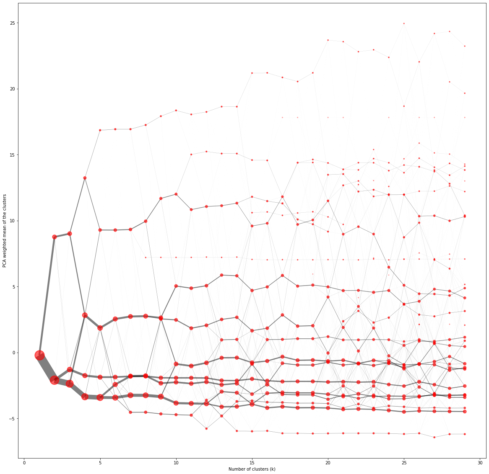
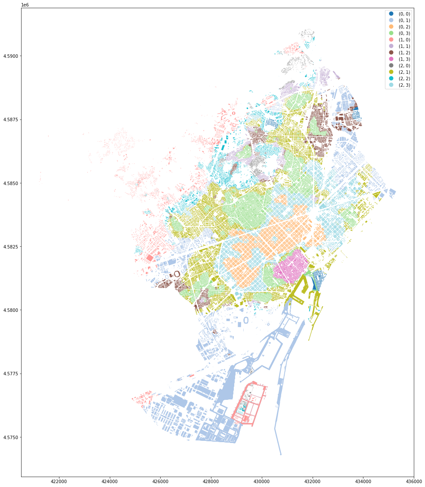
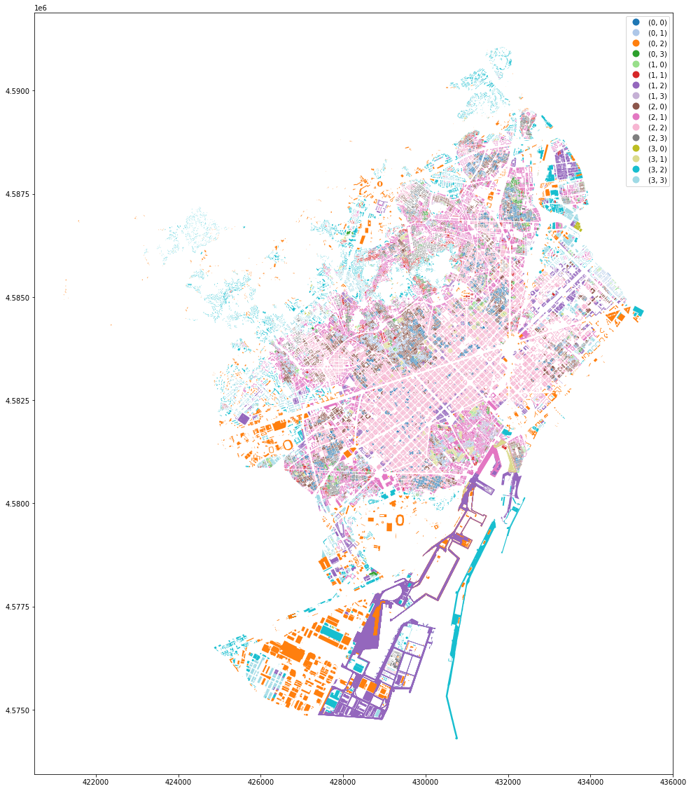
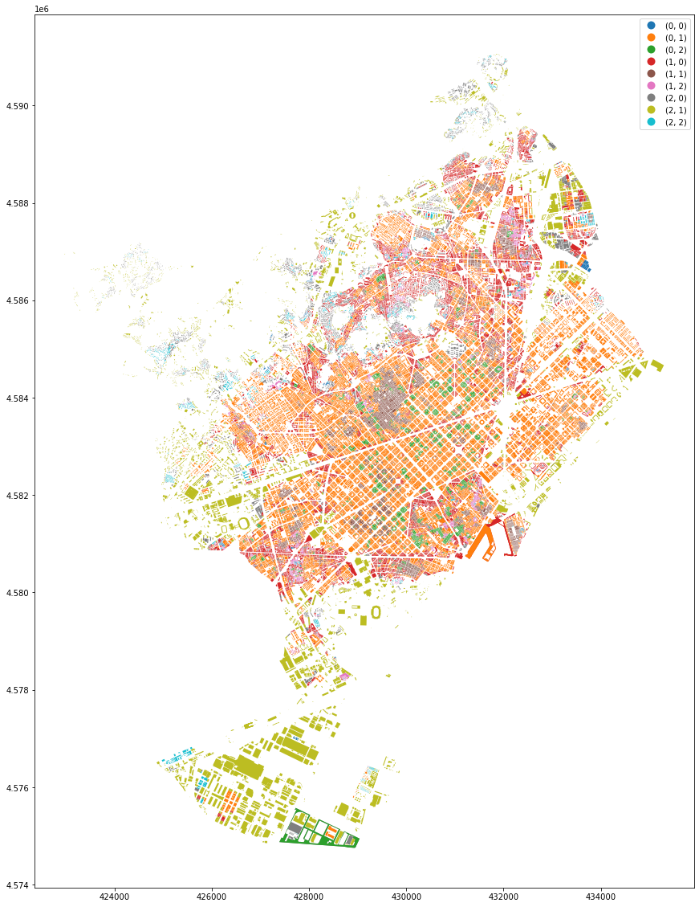
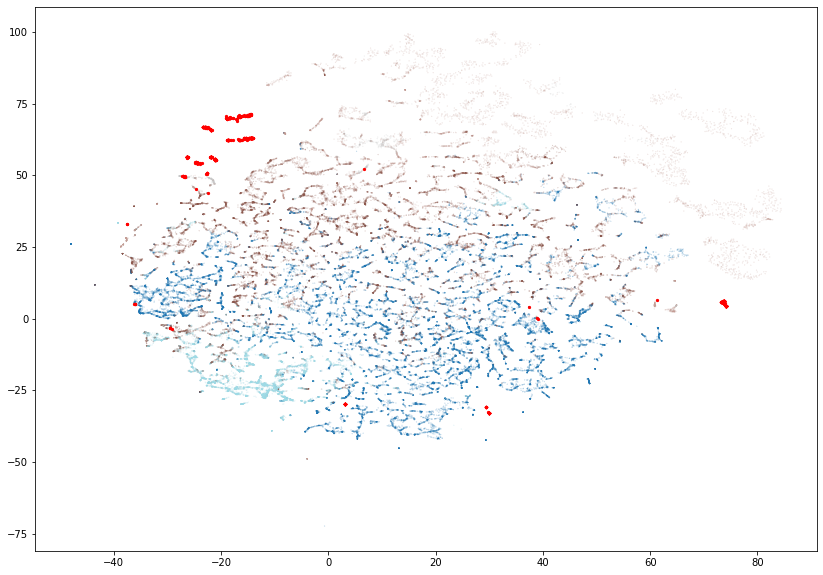
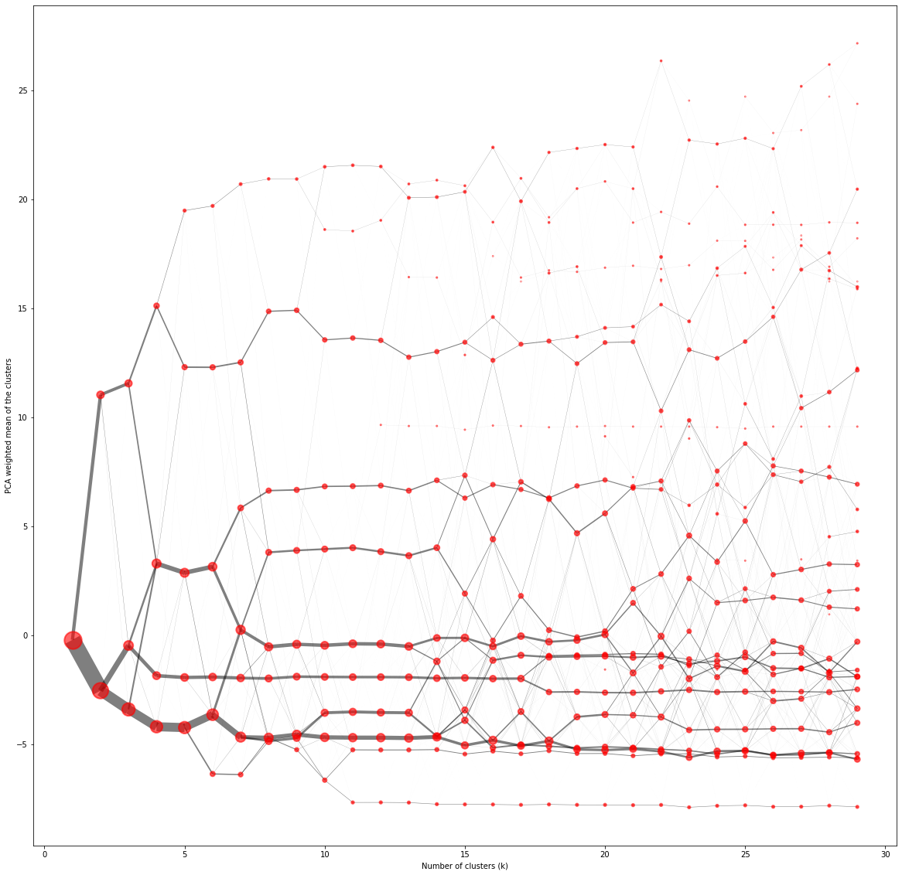
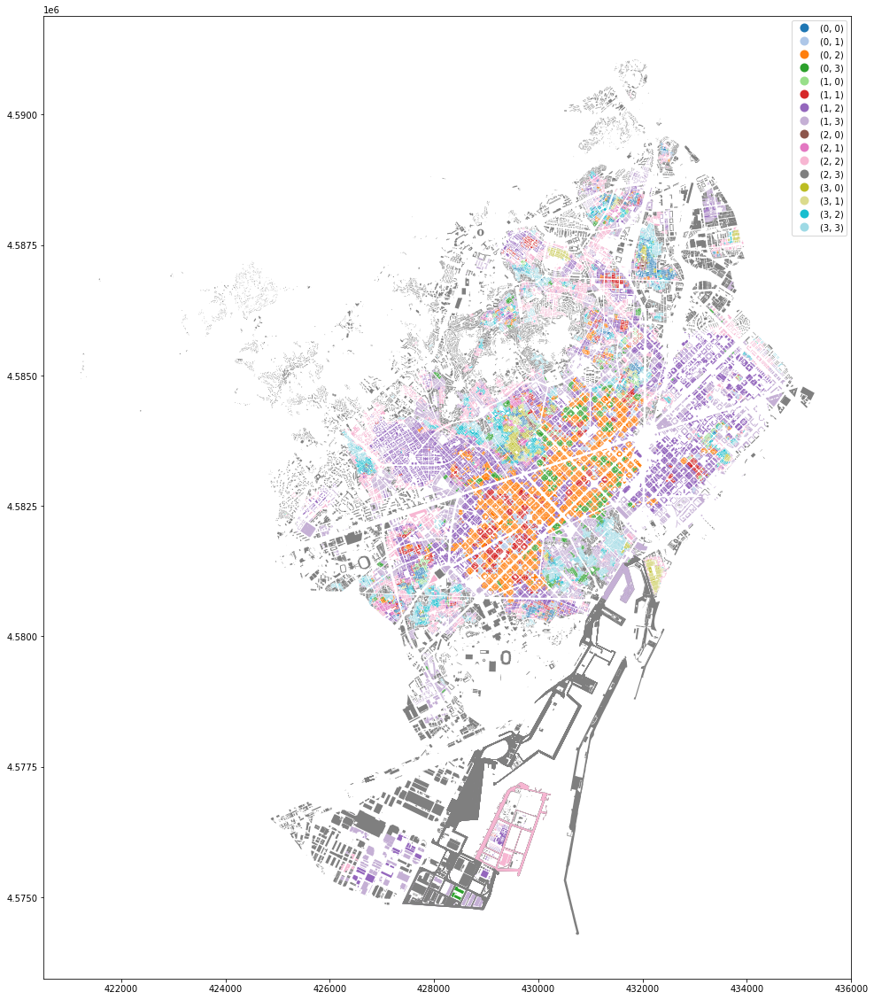
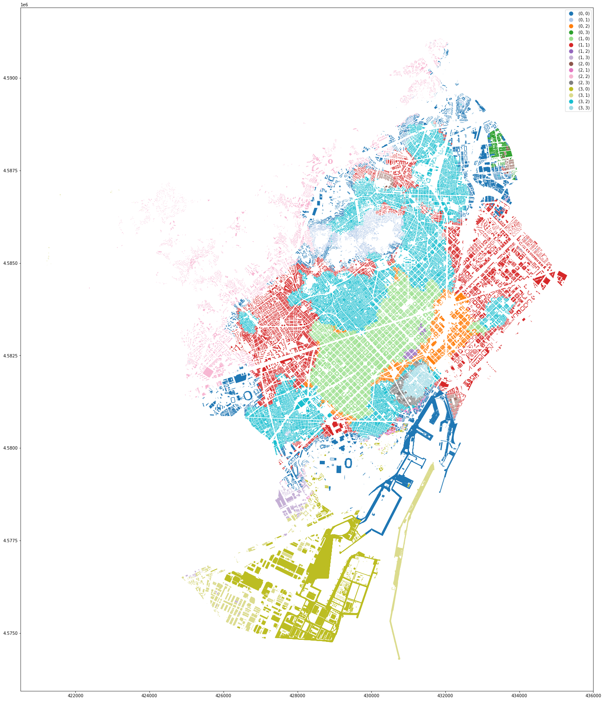
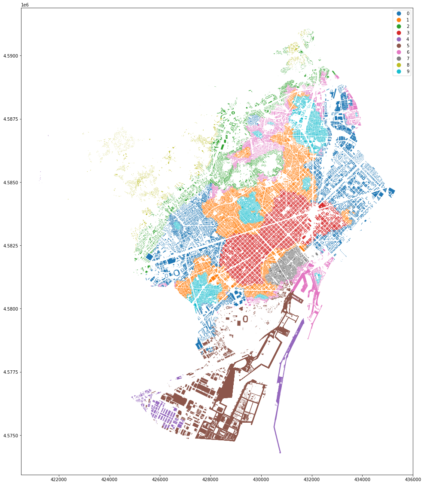

# gpu
# import cudf
# import cuml
# import rmm
# from cuml.manifold import TSNE
# cpu
import pandas as pd
import geopandas as gpd
import matplotlib.pyplot as plt
from sklearn.decomposition import PCA
from clustergram import Clustergram
from minisom import MiniSom
import numpy as np
rmm.reinitialize(managed_memory=True)
assert(rmm.is_initialized())
df = pd.read_parquet("../../urbangrammar_samba/sp_sig_concept/barcelona/convolutions.pq")
df = df.fillna(0)
data = (df-df.mean())/df.std()
data
| stcOri_q1 | stcOri_q2 | stcOri_q3 | stbOri_q1 | stbOri_q2 | stbOri_q3 | stbCeA_q1 | stbCeA_q2 | stbCeA_q3 | sdcLAL_q1 | ... | lseCWA_q3 | lteOri_q1 | lteOri_q2 | lteOri_q3 | lteWNB_q1 | lteWNB_q2 | lteWNB_q3 | lieWCe_q1 | lieWCe_q2 | lieWCe_q3 | |
|---|---|---|---|---|---|---|---|---|---|---|---|---|---|---|---|---|---|---|---|---|---|
| tID | |||||||||||||||||||||
| 0 | -0.765428 | -1.036946 | -1.343368 | -0.836283 | -1.024255 | -1.210914 | -0.493246 | -0.596989 | -0.777423 | -0.009435 | ... | -0.163423 | -0.969958 | -1.019912 | -1.068334 | 0.329578 | 0.420000 | 0.574130 | -0.014026 | -0.016042 | -0.016061 |
| 1 | -0.743337 | -1.034457 | -1.337423 | -0.823824 | -1.017163 | -1.216582 | -0.505864 | -0.631576 | -0.807774 | 0.186441 | ... | -0.183731 | -0.971369 | -1.022765 | -1.080539 | 0.329578 | 0.247841 | 0.090214 | -0.013388 | -0.016042 | -0.022057 |
| 2 | -0.746032 | -1.034457 | -1.337423 | -0.824800 | -1.017163 | -1.216582 | -0.505864 | -0.631576 | -0.811288 | 0.159770 | ... | -0.183731 | -0.971369 | -1.022765 | -1.080539 | 0.329578 | 0.247841 | 0.090214 | -0.013388 | -0.016042 | -0.022057 |
| 3 | -0.753247 | -1.045080 | -1.343132 | -0.839045 | -1.033370 | -1.225088 | -0.501205 | -0.628518 | -0.801293 | 0.159770 | ... | -0.183731 | -0.971369 | -1.022765 | -1.080539 | 0.329578 | 0.247841 | 0.090214 | -0.013388 | -0.016042 | -0.022057 |
| 4 | -0.753247 | -1.045080 | -1.350720 | -0.839045 | -1.033370 | -1.205088 | -0.472674 | -0.597849 | -0.755351 | 0.161811 | ... | -0.183731 | -0.971369 | -1.022765 | -1.080539 | 0.329578 | 0.247841 | 0.090214 | -0.013388 | -0.016042 | -0.022057 |
| ... | ... | ... | ... | ... | ... | ... | ... | ... | ... | ... | ... | ... | ... | ... | ... | ... | ... | ... | ... | ... | ... |
| 82370 | -0.080546 | -0.341971 | -0.544045 | -0.136110 | -0.311982 | -0.481744 | 4.411588 | 2.273688 | 0.909619 | 1.916955 | ... | -0.123379 | -0.333129 | -0.327966 | -0.323115 | -1.411289 | -0.715113 | -0.232835 | -0.029497 | -0.027106 | -0.024998 |
| 82371 | -0.526298 | -0.342414 | -0.543970 | -0.172995 | -0.311982 | -0.461528 | -0.057302 | 1.029714 | 1.737786 | 3.000662 | ... | 1.469756 | -0.283873 | -0.246806 | -0.073326 | -1.601286 | -1.039988 | -0.349235 | -0.029497 | -0.031561 | -0.027073 |
| 82372 | -0.201472 | -0.300567 | -0.515339 | -0.127655 | -0.303204 | -0.467431 | -0.173855 | 0.136119 | -0.140248 | 4.603946 | ... | 3.062891 | -0.259277 | -0.063852 | 0.112767 | -1.791282 | -1.483300 | -0.739487 | -0.029497 | -0.031802 | -0.029369 |
| 82373 | -0.275084 | -0.257124 | -0.169729 | -0.134326 | -0.299679 | -0.459668 | 0.998803 | 0.811870 | 0.189200 | 1.990171 | ... | 3.062891 | -0.252894 | -0.032541 | 0.112767 | -1.791282 | -1.210331 | 0.239291 | -0.029497 | -0.031561 | -0.017273 |
| 82374 | -0.299313 | 0.330727 | 0.353615 | 0.570539 | 0.480659 | 0.374678 | -0.023060 | 0.525362 | 1.356598 | 0.297864 | ... | -0.073216 | 0.130664 | 0.091078 | 0.376173 | -1.012275 | -0.585182 | -0.366041 | -0.020808 | -0.022506 | -0.024688 |
82375 rows × 177 columns
labels = pd.read_parquet("../../urbangrammar_samba/sp_sig_concept/barcelona/cluster_labels.pq")
labels
| tID | clusters | f_clusters | ss_clusters | |
|---|---|---|---|---|
| 0 | 0 | 0 | 7 | 0 |
| 1 | 1 | 0 | 7 | 0 |
| 2 | 2 | 0 | 7 | 0 |
| 3 | 3 | 0 | 7 | 0 |
| 4 | 4 | 0 | 6 | 0 |
| ... | ... | ... | ... | ... |
| 82370 | 82370 | 9 | 7 | 12 |
| 82371 | 82371 | 12 | 7 | 3 |
| 82372 | 82372 | 12 | 7 | 3 |
| 82373 | 82373 | 12 | 6 | 3 |
| 82374 | 82374 | 8 | 7 | 10 |
82375 rows × 4 columns
tsne = TSNE(n_components = 2, method = 'barnes_hut', random_state=23, perplexity=50, n_neighbors=150, learning_rate=5)
%time embedding = tsne.fit_transform(data.fillna(0))
[W] [18:56:48.873065] # of Nearest Neighbors should be at least 3 * perplexity. Your results might be a bit strange...
CPU times: user 2.34 s, sys: 2.72 s, total: 5.06 s
Wall time: 5.04 s
fig, ax = plt.subplots(1, figsize = (14, 10))
scatter = plt.scatter(embedding[0].to_array(), embedding[1].to_array(), s = 0.01, c=labels.clusters.values, cmap='tab20', label=labels.clusters.values)
scatter2 = plt.scatter(embedding[0].to_array()[~labels.clusters.isin([0, 16, 8, 9, 12])], embedding[1].to_array()[~labels.clusters.isin([0, 16, 8, 9, 12])], s = 5, c='r')
legend1 = ax.legend(*scatter.legend_elements('colors', 18),
loc="upper left", title="Classes")
ax.add_artist(legend1)
<matplotlib.legend.Legend at 0x7fb964e48be0>
pca_float = cuml.PCA(n_components = 2)
pca_float.fit(data.T.fillna(0))
---------------------------------------------------------------------------
MemoryError Traceback (most recent call last)
<ipython-input-10-ebca7821dad4> in <module>
1 pca_float = cuml.PCA(n_components = 2)
----> 2 pca_float.fit(data.T.fillna(0))
cuml/decomposition/pca.pyx in cuml.decomposition.pca.PCA.fit()
MemoryError: std::bad_alloc: CUDA error at: ../include/rmm/mr/device/managed_memory_resource.hpp:72: cudaErrorMemoryAllocation out of memory
pca_float = PCA(n_components = 2)
pca_float.fit(data.T.fillna(0).to_pandas())
PCA(n_components=2)
fig, ax = plt.subplots(1, figsize = (14, 10))
scatter = plt.scatter(pca_float.components_[0], pca_float.components_[1], s = .005, c=labels.clusters.values, cmap='tab20', label=labels.clusters.values)
scatter2 = plt.scatter(pca_float.components_[0][~labels.clusters.isin([0, 16, 8, 9, 12])], pca_float.components_[1][~labels.clusters.isin([0, 16, 8, 9, 12])], s = 1, c='r')
legend1 = ax.legend(*scatter.legend_elements('colors', 18),
loc="lower left", title="Classes")
ax.add_artist(legend1)
<matplotlib.legend.Legend at 0x7fb8ef557400>
dbscan = cuml.DBSCAN(eps=25, min_samples=1000)
dbscan.fit(data)
DBSCAN(eps=25, handle=<cuml.raft.common.handle.Handle object at 0x7fb95594cdb0>, min_samples=1000, verbose=4, max_mbytes_per_batch=0, output_type='cudf', calc_core_sample_indices=True)
dbscan.labels_.value_counts()
0 81521
-1 854
dtype: int32
gdf = gpd.read_parquet("../../urbangrammar_samba/sp_sig_concept/barcelona/func_data.pq", columns=['tessellation', 'buildings'])
gdf.plot(dbscan.labels_.to_array(), legend=True, figsize=(20, 20), categorical=True)
<AxesSubplot:>
fig, ax = plt.subplots(1, figsize = (14, 10))
labs = dbscan.labels_.to_array()
scatter = plt.scatter(pca_float.components_[0], pca_float.components_[1], s = .005, c=labs, cmap='tab20')
scatter2 = plt.scatter(pca_float.components_[0][labs != 0], pca_float.components_[1][labs != 0], s = 1, c='r', cmap='tab20')
# scatter2 = plt.scatter(pca_float.components_[0][~labels.clusters.isin([0, 16, 8, 9, 12])], pca_float.components_[1][~labels.clusters.isin([0, 16, 8, 9, 12])], s = 1, c='r')
legend1 = ax.legend(*scatter.legend_elements('colors', 2),
loc="lower left", title="Classes")
ax.add_artist(legend1)
<matplotlib.legend.Legend at 0x7fb8f20c3460>
cg = Clustergram(range(1, 30), backend='cuML', n_init=10)
cg.fit(data[labs == 0].fillna(0))
PCA computed in 0.5150232315063477 seconds.
K=1 fitted in 1.4002814292907715 seconds.
K=2 fitted in 4.117992162704468 seconds.
K=3 fitted in 3.798488140106201 seconds.
K=4 fitted in 5.766303539276123 seconds.
K=5 fitted in 4.623988151550293 seconds.
K=6 fitted in 6.067348003387451 seconds.
K=7 fitted in 6.945812702178955 seconds.
K=8 fitted in 7.403814792633057 seconds.
K=9 fitted in 9.181161165237427 seconds.
K=10 fitted in 8.755526304244995 seconds.
K=11 fitted in 12.167209148406982 seconds.
K=12 fitted in 11.175405025482178 seconds.
K=13 fitted in 14.51637887954712 seconds.
K=14 fitted in 15.342625617980957 seconds.
K=15 fitted in 16.198330640792847 seconds.
K=16 fitted in 17.859007358551025 seconds.
K=17 fitted in 19.468127727508545 seconds.
K=18 fitted in 18.572174549102783 seconds.
K=19 fitted in 22.0594539642334 seconds.
K=20 fitted in 22.702703952789307 seconds.
K=21 fitted in 20.25305438041687 seconds.
K=22 fitted in 22.773881196975708 seconds.
K=23 fitted in 23.797719717025757 seconds.
K=24 fitted in 25.163102388381958 seconds.
K=25 fitted in 25.202220678329468 seconds.
K=26 fitted in 27.76354193687439 seconds.
K=27 fitted in 26.75044083595276 seconds.
K=28 fitted in 20.038466691970825 seconds.
K=29 fitted in 29.06764578819275 seconds.
ax = cg.plot(figsize=(20, 20), linewidth=0.5, cluster_style={"edgecolor": "r", "alpha":.6}, size=1,
line_style={"alpha":.5})

cg = Clustergram(range(1, 30), backend='cuML', n_init=10)
cg.fit(data)
ax = cg.plot(figsize=(20, 20), linewidth=0.5, cluster_style={"edgecolor": "r", "alpha":.6}, size=1,
line_style={"alpha":.5})
PCA computed in 0.10293245315551758 seconds.
K=1 fitted in 1.4625706672668457 seconds.
K=2 fitted in 1.4933133125305176 seconds.
K=3 fitted in 1.8198699951171875 seconds.
K=4 fitted in 2.6966264247894287 seconds.
K=5 fitted in 3.4267964363098145 seconds.
K=6 fitted in 4.156064033508301 seconds.
K=7 fitted in 4.619518995285034 seconds.
K=8 fitted in 4.292588472366333 seconds.
K=9 fitted in 4.293422698974609 seconds.
K=10 fitted in 4.592234373092651 seconds.
K=11 fitted in 5.211864709854126 seconds.
K=12 fitted in 5.895902633666992 seconds.
K=13 fitted in 5.854001045227051 seconds.
K=14 fitted in 8.50324273109436 seconds.
K=15 fitted in 10.350634574890137 seconds.
K=16 fitted in 9.947759628295898 seconds.
K=17 fitted in 10.612266778945923 seconds.
K=18 fitted in 8.372377634048462 seconds.
K=19 fitted in 9.967509746551514 seconds.
K=20 fitted in 10.014095067977905 seconds.
K=21 fitted in 10.79461407661438 seconds.
K=22 fitted in 13.145453691482544 seconds.
K=23 fitted in 10.777518033981323 seconds.
K=24 fitted in 10.426666736602783 seconds.
K=25 fitted in 9.93813705444336 seconds.
K=26 fitted in 11.858729839324951 seconds.
K=27 fitted in 10.29359221458435 seconds.
K=28 fitted in 16.18970823287964 seconds.
K=29 fitted in 16.57529044151306 seconds.
km = cuml.KMeans(n_clusters=6, n_init=100).fit(data[labs == 0])
gdf[labs == 0].set_geometry('buildings').plot(km.labels_.to_array(), legend=True, figsize=(20, 20), categorical=True)
gdf[labs != 0].set_geometry('buildings').plot(color='k', ax=ax)
<AxesSubplot:xlabel='Number of clusters (k)', ylabel='PCA weighted mean of the clusters'>

ax = gdf[labs == 0].plot(km.labels_.to_array(), legend=True, figsize=(20, 20), categorical=True)
gdf[labs != 0].plot(color='k', ax=ax)
<AxesSubplot:>
km = cuml.KMeans(n_clusters=10, n_init=50).fit(data[labs == 0])
ax = gdf[labs == 0].set_geometry('buildings').plot(km.labels_.to_array(), legend=True, figsize=(20, 20), categorical=True)
gdf[labs != 0].set_geometry('buildings').plot(color='k', ax=ax)
<AxesSubplot:>
ax = gdf[labs == 0].plot(km.labels_.to_array(), legend=True, figsize=(20, 20), categorical=True)
gdf[labs != 0].plot(color='k', ax=ax)
<AxesSubplot:>
npdata = data.fillna(0).values
npdata.max()
276.94620816626656
som_shape = (3, 4)
som = MiniSom(som_shape[0], som_shape[1], npdata.shape[1], sigma=.01, learning_rate=.01,
neighborhood_function='gaussian', random_seed=10)
som.train_batch(npdata, 50000, verbose=True)
winner_coordinates = np.array([som.winner(x) for x in npdata])
hashes = np.apply_along_axis(lambda x: str(tuple(x)), 1, winner_coordinates)
ax = gdf.set_geometry('buildings').plot(hashes, legend=True, figsize=(20, 20), categorical=True, cmap='tab20')

som_shape = (4, 4)
som = MiniSom(som_shape[0], som_shape[1], npdata.shape[1], sigma=.5, learning_rate=.25,
neighborhood_function='gaussian', random_seed=10)
som.train_batch(npdata, 50000, verbose=True)
[ 50000 / 50000 ] 100% - 0:00:00 left
quantization error: nan
winner_coordinates = np.array([som.winner(x) for x in npdata])
hashes = np.apply_along_axis(lambda x: str(tuple(x)), 1, winner_coordinates)
ax = gdf.set_geometry('buildings').plot(hashes, legend=True, figsize=(20, 20), categorical=True, cmap='tab20')

som_shape = (3, 3)
som = MiniSom(som_shape[0], som_shape[1], npdata.shape[1], sigma=.5, learning_rate=.25,
neighborhood_function='gaussian', random_seed=10)
som.train_batch(npdata[labs == 0], 50000, verbose=True)
[ 50000 / 50000 ] 100% - 0:00:00 left
quantization error: 9.492632806029764
winner_coordinates = np.array([som.winner(x) for x in npdata[labs == 0]])
hashes = np.apply_along_axis(lambda x: str(tuple(x)), 1, winner_coordinates)
ax = gdf[labs == 0].set_geometry('buildings').plot(hashes, legend=True, figsize=(20, 20), categorical=True)

from sklearn.mixture import GaussianMixture
n = 10
gmm = GaussianMixture(n_components=n, covariance_type="full", max_iter=200, n_init=5, verbose=1)
fitted = gmm.fit(data[labs == 0].as_matrix())
Initialization 0
Iteration 10
Iteration 20
Iteration 30
Iteration 40
Iteration 50
Iteration 60
Iteration 70
Initialization converged: True
Initialization 1
Iteration 10
Iteration 20
Iteration 30
Iteration 40
Iteration 50
Iteration 60
Iteration 70
Iteration 80
Iteration 90
Iteration 100
Iteration 110
Iteration 120
Initialization converged: True
Initialization 2
Iteration 10
Iteration 20
Iteration 30
Iteration 40
Iteration 50
Iteration 60
Initialization converged: True
Initialization 3
Iteration 10
Iteration 20
Iteration 30
Iteration 40
Iteration 50
Initialization converged: True
Initialization 4
Iteration 10
Iteration 20
Iteration 30
Iteration 40
Iteration 50
Iteration 60
Iteration 70
Iteration 80
Iteration 90
Initialization converged: True
ax = gdf[labs == 0].set_geometry('buildings').plot(gmm.predict(data[labs == 0].as_matrix()), legend=True, figsize=(20, 20), categorical=True)

Convolutions based on larger number of neighbours¶
prim = gpd.read_parquet("../../urbangrammar_samba/sp_sig_concept/barcelona/data.pq")
prim.geometry.name
'tessellation'
from momepy import sw_high
from libpysal.weights import Queen
%time queen = Queen.from_dataframe(prim, geom_col='tessellation')
%time queen_10 = sw_high(k=10, weights=queen)
CPU times: user 2min 9s, sys: 4.62 s, total: 2min 13s
Wall time: 2min 13s
characters = ['stcOri', 'stbOri',
'stbCeA', 'sdcLAL', 'sdcAre', 'sscCCo', 'sscERI', 'sicCAR', 'mtbAli',
'mtbNDi', 'mtcWNe', 'mdcAre', 'ltbIBD',
'stcSAl', 'ltcWRE',
'sdbAre', 'sdbPer', 'sdbCoA', 'ssbCCo', 'ssbCor', 'ssbSqu',
'ssbERI', 'ssbElo', 'ssbCCM', 'ssbCCD', 'mtbSWR', 'ldbPWL', 'stbSAl',
'libNCo', 'sdsLen', 'sdsSPW', 'sdsSPO', 'sdsSWD', 'sssLin', 'sdsAre',
'sisBpM', 'misRea', 'mdsAre', 'ldsMSL', 'degree', 'meshedness',
'proportion_3', 'proportion_4', 'proportion_0', 'local_closeness',
'ldsCDL', 'xcnSCl', 'mtdMDi', 'lddNDe', 'linWID', 'sddAre', 'ldeAre',
'ldePer', 'lseCCo', 'lseERI', 'lseCWA', 'lteOri', 'lteWNB', 'lieWCe']
data = prim.set_index('tID')[characters]
from tqdm import tqdm
import pandas as pd
import numpy as np
convolutions = {}
for c in characters:
convolutions[c] = []
# measure convolutions
for i in tqdm(data.index, total=data.shape[0]):
neighbours = [i]
neighbours += queen_10.neighbors[i]
vicinity = data.iloc[neighbours]
for c in characters:
convolutions[c].append(np.nanpercentile(vicinity[c], [25, 50, 75], interpolation='midpoint'))
100%|██████████| 82375/82375 [11:43<00:00, 117.12it/s]
%time conv = pd.DataFrame(convolutions, index=data.index)
%time exploded = pd.concat([pd.DataFrame(conv[c].to_list(), columns=[c + '_q1', c + '_q2',c + '_q3']) for c in characters], axis=1)
exploded.index = data.index
exploded.to_parquet("../../urbangrammar_samba/sp_sig_concept/barcelona/convolutions_q10.pq")
CPU times: user 1.03 s, sys: 28.8 ms, total: 1.06 s
Wall time: 1.05 s
CPU times: user 6.82 s, sys: 45.8 ms, total: 6.87 s
Wall time: 6.86 s
%time queen_3 = sw_high(k=3, weights=queen)
convolutions = {}
for c in characters:
convolutions[c] = []
# measure convolutions
for i in tqdm(data.index, total=data.shape[0]):
neighbours = [i]
neighbours += queen_3.neighbors[i]
vicinity = data.iloc[neighbours]
for c in characters:
convolutions[c].append(np.nanpercentile(vicinity[c], [25, 50, 75], interpolation='midpoint'))
conv = pd.DataFrame(convolutions, index=data.index)
exploded_3 = pd.concat([pd.DataFrame(conv[c].to_list(), columns=[c + '_q1', c + '_q2',c + '_q3']) for c in characters], axis=1)
exploded_3.index = data.index
exploded_3.to_parquet("../../urbangrammar_samba/sp_sig_concept/barcelona/convolutions_q3.pq")
0%| | 14/82375 [00:00<10:20, 132.69it/s]
CPU times: user 5.51 s, sys: 103 ms, total: 5.61 s
Wall time: 5.6 s
95%|█████████▍| 77921/82375 [09:36<00:33, 134.71it/s]/opt/conda/envs/rapids/lib/python3.8/site-packages/numpy/lib/nanfunctions.py:1368: RuntimeWarning: All-NaN slice encountered
r, k = function_base._ureduce(
100%|██████████| 82375/82375 [10:10<00:00, 135.03it/s]
df3 = cudf.read_parquet("../../urbangrammar_samba/sp_sig_concept/barcelona/convolutions_q3.pq")
df3 = df3.fillna(0)
data = (df3 - df3.mean()) / df3.std()
cg = Clustergram(range(1, 30), backend='cuML', n_init=10)
cg.fit(data)
ax = cg.plot(figsize=(20, 20), linewidth=0.5, cluster_style={"edgecolor": "r", "alpha":.6}, size=1,
line_style={"alpha":.5})
PCA computed in 0.9020164012908936 seconds.
K=1 fitted in 1.4722132682800293 seconds.
K=2 fitted in 2.3437063694000244 seconds.
K=3 fitted in 3.4525182247161865 seconds.
K=4 fitted in 4.602993011474609 seconds.
K=5 fitted in 3.89237380027771 seconds.
K=6 fitted in 4.350352764129639 seconds.
K=7 fitted in 4.025259733200073 seconds.
K=8 fitted in 4.879567861557007 seconds.
K=9 fitted in 7.693552732467651 seconds.
K=10 fitted in 7.329221248626709 seconds.
K=11 fitted in 7.839165449142456 seconds.
K=12 fitted in 7.893970489501953 seconds.
K=13 fitted in 8.288496255874634 seconds.
K=14 fitted in 9.418133735656738 seconds.
K=15 fitted in 8.428847074508667 seconds.
K=16 fitted in 8.08144235610962 seconds.
K=17 fitted in 9.912070989608765 seconds.
K=18 fitted in 12.976916074752808 seconds.
K=19 fitted in 16.065617561340332 seconds.
K=20 fitted in 12.817716598510742 seconds.
K=21 fitted in 15.094518184661865 seconds.
K=22 fitted in 15.057557344436646 seconds.
K=23 fitted in 12.943334817886353 seconds.
K=24 fitted in 12.945035457611084 seconds.
K=25 fitted in 16.028043031692505 seconds.
K=26 fitted in 15.581788539886475 seconds.
K=27 fitted in 14.595170974731445 seconds.
K=28 fitted in 21.31261444091797 seconds.
K=29 fitted in 19.05107307434082 seconds.
tsne = TSNE(n_components = 2, method = 'barnes_hut', random_state=23, perplexity=50, n_neighbors=150, learning_rate=5)
%time embedding = tsne.fit_transform(data)
[W] [20:51:07.322343] # of Nearest Neighbors should be at least 3 * perplexity. Your results might be a bit strange...
CPU times: user 1.63 s, sys: 2.14 s, total: 3.77 s
Wall time: 3.75 s
fig, ax = plt.subplots(1, figsize = (14, 10))
scatter = plt.scatter(embedding[0].to_array(), embedding[1].to_array(), s = 0.01, c=labels.clusters.values, cmap='tab20', label=labels.clusters.values)
scatter2 = plt.scatter(embedding[0].to_array()[~labels.clusters.isin([0, 16, 8, 9, 12])], embedding[1].to_array()[~labels.clusters.isin([0, 16, 8, 9, 12])], s = 5, c='r')
# legend1 = ax.legend(*scatter.legend_elements('colors', 18),
# loc="upper left", title="Classes")
# ax.add_artist(legend1)

pca_float = PCA(n_components = 2)
pca_float.fit(data.T.to_pandas())
PCA(n_components=2)
fig, ax = plt.subplots(1, figsize = (14, 10))
scatter = plt.scatter(pca_float.components_[0], pca_float.components_[1], s = .005, c=labels.clusters.values, cmap='tab20', label=labels.clusters.values)
scatter2 = plt.scatter(pca_float.components_[0][~labels.clusters.isin([0, 16, 8, 9, 12])], pca_float.components_[1][~labels.clusters.isin([0, 16, 8, 9, 12])], s = 1, c='r')
legend1 = ax.legend(*scatter.legend_elements('colors', 18),
loc="lower left", title="Classes")
ax.add_artist(legend1)
<matplotlib.legend.Legend at 0x7fa9020e77f0>
dbscan = cuml.DBSCAN(eps=25, min_samples=1000)
dbscan.fit(data)
DBSCAN(eps=25, handle=<cuml.raft.common.handle.Handle object at 0x7faa282fa390>, min_samples=1000, verbose=4, max_mbytes_per_batch=0, output_type='cudf', calc_core_sample_indices=True)
dbscan.labels_.value_counts()
0 81448
-1 927
dtype: int32
gdf.plot(dbscan.labels_.to_array(), legend=True, figsize=(20, 20), categorical=True)
<AxesSubplot:>
fig, ax = plt.subplots(1, figsize = (14, 10))
labs = dbscan.labels_.to_array()
scatter = plt.scatter(pca_float.components_[0], pca_float.components_[1], s = .005, c=labs, cmap='tab20')
scatter2 = plt.scatter(pca_float.components_[0][labs != 0], pca_float.components_[1][labs != 0], s = 1, c='r', cmap='tab20')
# scatter2 = plt.scatter(pca_float.components_[0][~labels.clusters.isin([0, 16, 8, 9, 12])], pca_float.components_[1][~labels.clusters.isin([0, 16, 8, 9, 12])], s = 1, c='r')
legend1 = ax.legend(*scatter.legend_elements('colors', 2),
loc="lower left", title="Classes")
ax.add_artist(legend1)
<matplotlib.legend.Legend at 0x7fa9018515e0>
cg = Clustergram(range(1, 30), backend='cuML', n_init=10)
cg.fit(data[labs == 0])
PCA computed in 0.07715702056884766 seconds.
K=1 fitted in 1.3902249336242676 seconds.
K=2 fitted in 2.968261480331421 seconds.
K=3 fitted in 4.920335054397583 seconds.
K=4 fitted in 6.406586170196533 seconds.
K=5 fitted in 4.545974254608154 seconds.
K=6 fitted in 9.230101346969604 seconds.
K=7 fitted in 9.58447527885437 seconds.
K=8 fitted in 13.072758913040161 seconds.
K=9 fitted in 12.799537181854248 seconds.
K=10 fitted in 10.024179220199585 seconds.
K=11 fitted in 9.305215835571289 seconds.
K=12 fitted in 10.798791885375977 seconds.
K=13 fitted in 9.376322746276855 seconds.
K=14 fitted in 12.935173511505127 seconds.
K=15 fitted in 15.917510271072388 seconds.
K=16 fitted in 15.071285247802734 seconds.
K=17 fitted in 17.676604986190796 seconds.
K=18 fitted in 15.609446048736572 seconds.
K=19 fitted in 15.02450966835022 seconds.
K=20 fitted in 17.818890810012817 seconds.
K=21 fitted in 16.889872550964355 seconds.
K=22 fitted in 18.12534523010254 seconds.
K=23 fitted in 19.674806594848633 seconds.
K=24 fitted in 17.44553804397583 seconds.
K=25 fitted in 19.05314016342163 seconds.
K=26 fitted in 20.31961750984192 seconds.
K=27 fitted in 17.71043562889099 seconds.
K=28 fitted in 23.934980630874634 seconds.
K=29 fitted in 22.709083080291748 seconds.
ax = cg.plot(figsize=(20, 20), linewidth=0.5, cluster_style={"edgecolor": "r", "alpha":.6}, size=1,
line_style={"alpha":.5})

km = cuml.KMeans(n_clusters=7, n_init=100).fit(data[labs == 0])
gdf[labs == 0].set_geometry('buildings').plot(km.labels_.to_array(), legend=True, figsize=(20, 20), categorical=True)
gdf[labs != 0].set_geometry('buildings').plot(color='k', ax=ax)
<AxesSubplot:xlabel='Number of clusters (k)', ylabel='PCA weighted mean of the clusters'>
gdf[labs == 0].plot(km.labels_.to_array(), legend=True, figsize=(20, 20), categorical=True)
gdf[labs != 0].plot(color='k', ax=ax)
<AxesSubplot:xlabel='Number of clusters (k)', ylabel='PCA weighted mean of the clusters'>
km = cuml.KMeans(n_clusters=10, n_init=100).fit(data[labs == 0])
gdf[labs == 0].set_geometry('buildings').plot(km.labels_.to_array(), legend=True, figsize=(20, 20), categorical=True)
gdf[labs != 0].set_geometry('buildings').plot(color='k', ax=ax)
<AxesSubplot:xlabel='Number of clusters (k)', ylabel='PCA weighted mean of the clusters'>
gdf[labs == 0].plot(km.labels_.to_array(), legend=True, figsize=(20, 20), categorical=True)
gdf[labs != 0].plot(color='k', ax=ax)
<AxesSubplot:xlabel='Number of clusters (k)', ylabel='PCA weighted mean of the clusters'>
data = data.as_matrix()
som_shape = (4, 4)
som = MiniSom(som_shape[0], som_shape[1], data.shape[1], sigma=1.25, learning_rate=.1,
neighborhood_function='gaussian', random_seed=10)
som.train_batch(data, 50000, verbose=True)
[ 50000 / 50000 ] 100% - 0:00:00 left
quantization error: 11.160270955930306
winner_coordinates = np.array([som.winner(x) for x in data])
hashes = np.apply_along_axis(lambda x: str(tuple(x)), 1, winner_coordinates)
ax = gdf.set_geometry('buildings').plot(hashes, legend=True, figsize=(20, 20), categorical=True, cmap='tab20')

queen 10¶
df10 = pd.read_parquet("../../urbangrammar_samba/sp_sig_concept/barcelona/convolutions_q10.pq")
df10 = df10.fillna(0)
data = (df10 - df10.mean()) / df10.std()
data = data.fillna(0)
data.isna().any().any()
False
data = cudf.from_pandas(data)
data.nans_to_nulls().isna().any().any()
False
pdf = data.to_pandas()
cg = Clustergram(range(1, 30), backend='cuML', n_init=10)
cg.fit(data)
ax = cg.plot(figsize=(20, 20), linewidth=0.5, cluster_style={"edgecolor": "r", "alpha":.6}, size=1,
line_style={"alpha":.5})
PCA computed in 0.11246871948242188 seconds.
K=1 fitted in 1.4069030284881592 seconds.
K=2 fitted in 1.4172418117523193 seconds.
K=3 fitted in 1.8079965114593506 seconds.
K=4 fitted in 2.5279881954193115 seconds.
K=5 fitted in 3.496829032897949 seconds.
K=6 fitted in 3.671403646469116 seconds.
K=7 fitted in 3.4594223499298096 seconds.
K=8 fitted in 3.607029438018799 seconds.
K=9 fitted in 3.864515542984009 seconds.
K=10 fitted in 3.813978910446167 seconds.
K=11 fitted in 4.309239149093628 seconds.
K=12 fitted in 5.074766397476196 seconds.
K=13 fitted in 5.764745473861694 seconds.
K=14 fitted in 5.861517667770386 seconds.
K=15 fitted in 7.089661121368408 seconds.
K=16 fitted in 7.610518217086792 seconds.
K=17 fitted in 7.045271396636963 seconds.
K=18 fitted in 9.07113528251648 seconds.
K=19 fitted in 8.117372274398804 seconds.
K=20 fitted in 10.598515510559082 seconds.
K=21 fitted in 10.270423412322998 seconds.
K=22 fitted in 8.721359252929688 seconds.
K=23 fitted in 10.286149263381958 seconds.
K=24 fitted in 10.70141339302063 seconds.
K=25 fitted in 9.65402340888977 seconds.
K=26 fitted in 11.317023754119873 seconds.
K=27 fitted in 12.908724308013916 seconds.
K=28 fitted in 10.361891746520996 seconds.
K=29 fitted in 10.757899522781372 seconds.
ax = cg.plot(figsize=(20, 20), linewidth=0.5, cluster_style={"edgecolor": "r", "alpha":.6}, size=1,
line_style={"alpha":.5})
ax.set_ylim(-34, 10)
(-34.0, 10.0)
km = cuml.KMeans(n_clusters=10, n_init=100).fit(data)
gdf.set_geometry('buildings').plot(km.labels_.to_array(), legend=True, figsize=(20, 20), categorical=True)
gdf.set_geometry('buildings').plot(color='k', ax=ax)
<AxesSubplot:xlabel='Number of clusters (k)', ylabel='PCA weighted mean of the clusters'>
gdf.plot(km.labels_.to_array(), legend=True, figsize=(20, 20), categorical=True)
<AxesSubplot:>
km = cuml.KMeans(n_clusters=14, n_init=100).fit(data)
gdf.set_geometry('buildings').plot(km.labels_.to_array(), legend=True, figsize=(20, 20), categorical=True, cmap='tab20')
<AxesSubplot:>
km = cuml.KMeans(n_clusters=20, n_init=100).fit(data)
gdf.set_geometry('buildings').plot(km.labels_.to_array(), legend=True, figsize=(20, 20), categorical=True, cmap='tab20')
<AxesSubplot:>
som_shape = (4, 4)
som = MiniSom(som_shape[0], som_shape[1], data.shape[1], sigma=.25, learning_rate=.25,
neighborhood_function='gaussian', random_seed=10)
som.train_batch(data.values, 50000, verbose=True)
[ 50000 / 50000 ] 100% - 0:00:00 left
quantization error: 9.19291811775529
winner_coordinates = np.array([som.winner(x) for x in data.values])
hashes = np.apply_along_axis(lambda x: str(tuple(x)), 1, winner_coordinates)
ax = gdf.set_geometry('buildings').plot(hashes, legend=True, figsize=(30, 30), categorical=True, cmap='tab20')

n = 10
gmm = GaussianMixture(n_components=n, covariance_type="full", max_iter=200, n_init=5, verbose=1)
fitted = gmm.fit(pdf)
Initialization 0
Iteration 10
Iteration 20
Iteration 30
Iteration 40
Initialization converged: True
Initialization 1
Iteration 10
Iteration 20
Iteration 30
Iteration 40
Iteration 50
Iteration 60
Initialization converged: True
Initialization 2
Iteration 10
Iteration 20
Iteration 30
Iteration 40
Iteration 50
Iteration 60
Initialization converged: True
Initialization 3
Iteration 10
Iteration 20
Iteration 30
Iteration 40
Iteration 50
Iteration 60
Iteration 70
Initialization converged: True
Initialization 4
Iteration 10
Iteration 20
Iteration 30
Iteration 40
Iteration 50
Iteration 60
Initialization converged: True
ax = gdf.set_geometry('buildings').plot(gmm.predict(data.as_matrix()), legend=True, figsize=(20, 20), categorical=True)

from pycave.bayes import GMM
data.shape
(82375, 177)
gmm = GMM(num_components=16, num_features=177, covariance='diag')
history = gmm.fit(data)
%%time
gmm = GaussianMixture(n_components=15, covariance_type="full", max_iter=200, n_init=5, verbose=1)
fitted = gmm.fit(npdata)
Initialization 0
Iteration 10
Iteration 20
Iteration 30
Iteration 40
Initialization converged: True
Initialization 1
Iteration 10
Iteration 20
Iteration 30
Iteration 40
Iteration 50
Initialization converged: True
Initialization 2
Iteration 10
Iteration 20
Iteration 30
Iteration 40
Iteration 50
Iteration 60
Initialization converged: True
Initialization 3
Iteration 10
Iteration 20
Iteration 30
Iteration 40
Iteration 50
Initialization converged: True
Initialization 4
Iteration 10
Iteration 20
Iteration 30
Iteration 40
Iteration 50
Initialization converged: True
CPU times: user 1h 48min 51s, sys: 2h 11min 30s, total: 4h 21s
Wall time: 16min 25s
pip install scikit-learn-extra
Collecting scikit-learn-extra
Downloading scikit_learn_extra-0.2.0-cp38-cp38-manylinux2010_x86_64.whl (1.9 MB)
|████████████████████████████████| 1.9 MB 6.6 MB/s eta 0:00:01
?25hRequirement already satisfied: numpy>=1.13.3 in /opt/conda/lib/python3.8/site-packages (from scikit-learn-extra) (1.20.1)
Requirement already satisfied: scikit-learn>=0.23.0 in /opt/conda/lib/python3.8/site-packages (from scikit-learn-extra) (0.24.1)
Requirement already satisfied: scipy>=0.19.1 in /opt/conda/lib/python3.8/site-packages (from scikit-learn-extra) (1.6.0)
Requirement already satisfied: joblib>=0.11 in /opt/conda/lib/python3.8/site-packages (from scikit-learn>=0.23.0->scikit-learn-extra) (1.0.1)
Requirement already satisfied: threadpoolctl>=2.0.0 in /opt/conda/lib/python3.8/site-packages (from scikit-learn>=0.23.0->scikit-learn-extra) (2.1.0)
Installing collected packages: scikit-learn-extra
Successfully installed scikit-learn-extra-0.2.0
Note: you may need to restart the kernel to use updated packages.
from sklearn_extra.cluster import KMedoids
%%time
km = KMedoids(n_clusters=10, random_state=42).fit(npdata)
CPU times: user 2min 32s, sys: 2min 2s, total: 4min 35s
Wall time: 2min 6s
gdf.set_geometry('buildings').plot(km.labels_, legend=True, figsize=(20, 20), categorical=True, cmap='tab20')
<AxesSubplot:>